Now, you have installed OpenWalnut and are ready to go? Then have a look at this tutorial. We will give you a short overview on OpenWalnut's GUI and how you can load, manipulate, and visualize data.
The first thing you will see on first start is the welcome dialog. It contains a lot of useful links:
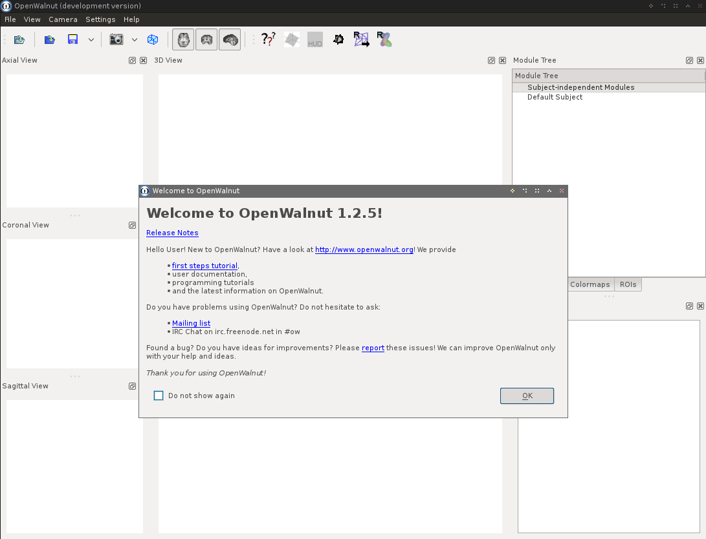
If you do not want to see this screen again, simple check the "do not show again" box and close the dialog. Now you are in the main GUI of OpenWalnut. The next image helps you to understand the different main elements of the GUI:
But now, lets see OpenWalnut in action. We begin by loading a peeled T1 dataset. Simply press the load button and the file dialog will open:
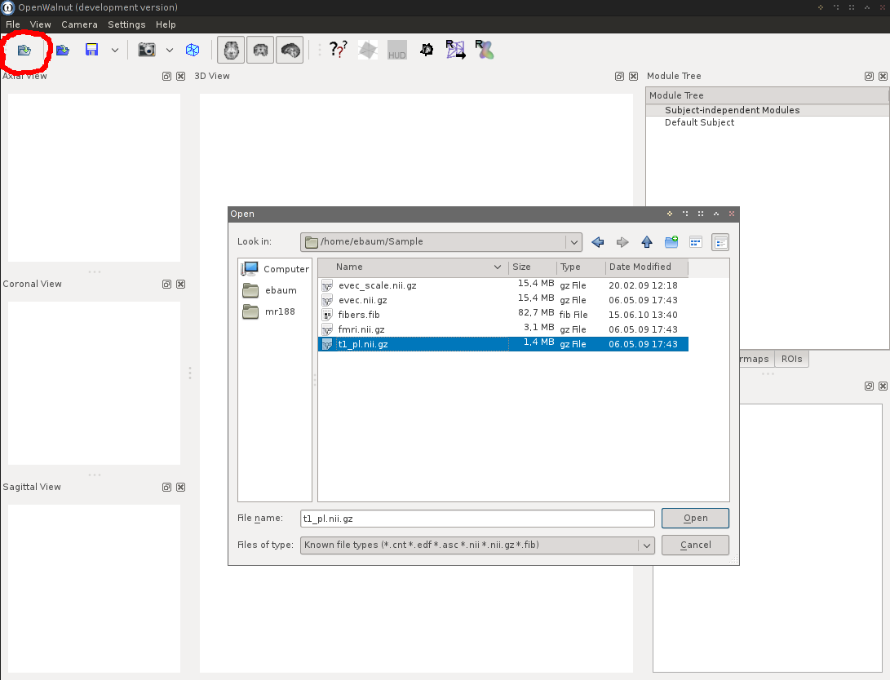
After opening the file, OpenWalnut will automatically start the Navigation Slices module. This module allows you to orthogonally slice through your data. Just try it. Use the sliders in the navigation windows, or right-click on a slice in the 3D view. Dragging the mouse will move the slices.
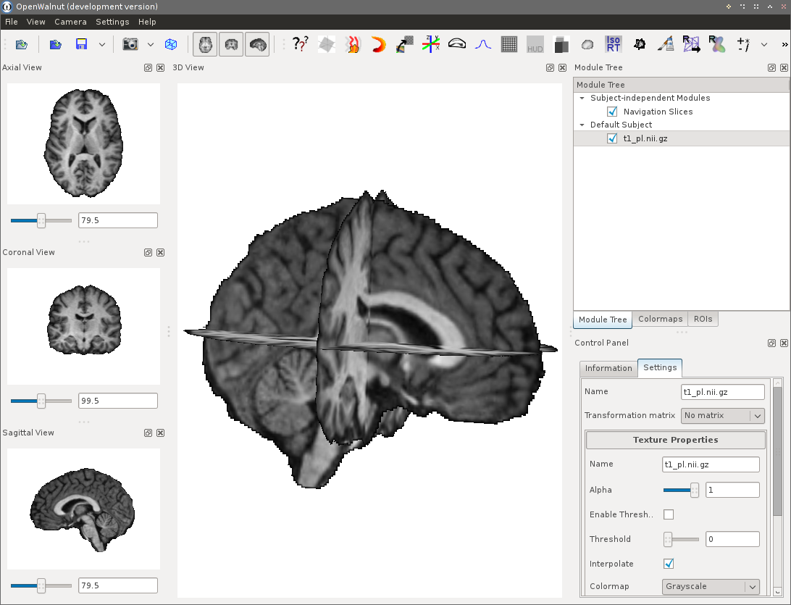
You will also notice that the module tree now contains and entry for the navigation module and the data. In OpenWalnut, everything you load and every module you use will appear in the module tree. In the remaining tutorial, you will learn how to use the module tree and control panel to create custom and complex processing/visualization pipelines.
At this point, we already loaded a T1 dataset. We will use this as context. Now, we load a FMRI dataset. Therefore, click on the load button again and select the dataset. The dataset now appears in the module tree. We want to see the activation in 3D. So, we apply the Isosurface module to it. To do this, select the FMRI dataset in the module tree and choose the Isosurface Raytracer module in the module toolbar:
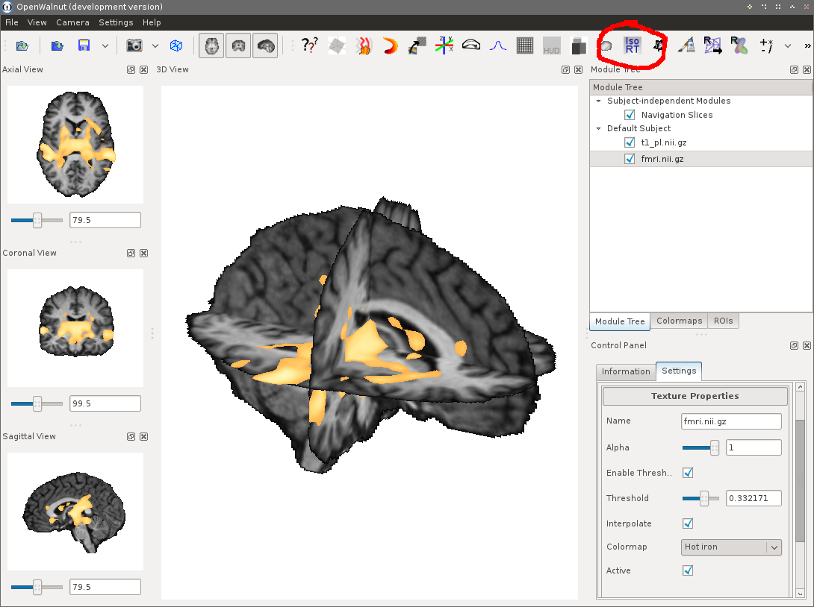
After doing this, the isosurface appears in the 3D view. The Isosurface module appears in the module tree, similar to the datasets. But this time, it is below (and indented) the FMRI data, as we have applied this module to the FMRI dataset. We can now manipulate the isosurface by changing the iso-value. This can be done in the control panel. Select the Isosurface module and modify the Isovalue parameter in the control panel:
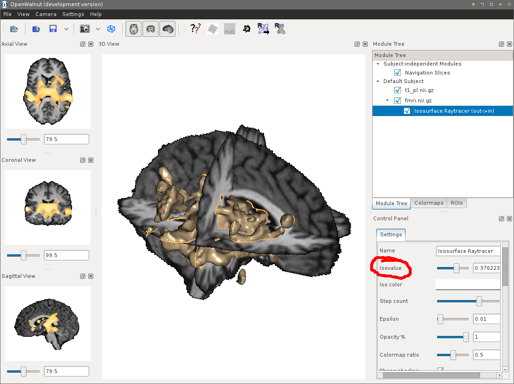
At this point, the basic usage of the module tree and the control panel is clear. In OpenWalnut, everything has tool-tip mini-help. Just hover with the mouse over an module, dataset or parameter and a small help will pop up. Lets summarize basic usage:
Now, lets continue by extending the data flow network. The isosurface for the FMRI data is too rough; lets smooth it. We, therefore, apply the Gauss Filtering module to it. How can this be done? Do you remember how we have applied the Isosurface module to the FMRI data? In the same way, we apply the Gauss Filtering module. Now lets use the context menu. Although the context menu and the module toolbar provide the same functionality, I usually prefer the context menu. Select the FMRI dataset by right-clicking on it. The context menu will how up. Choose the submenu "Connect with new module". In there, you will find all the modules which are compatible with the data. Select the Gauss Module:
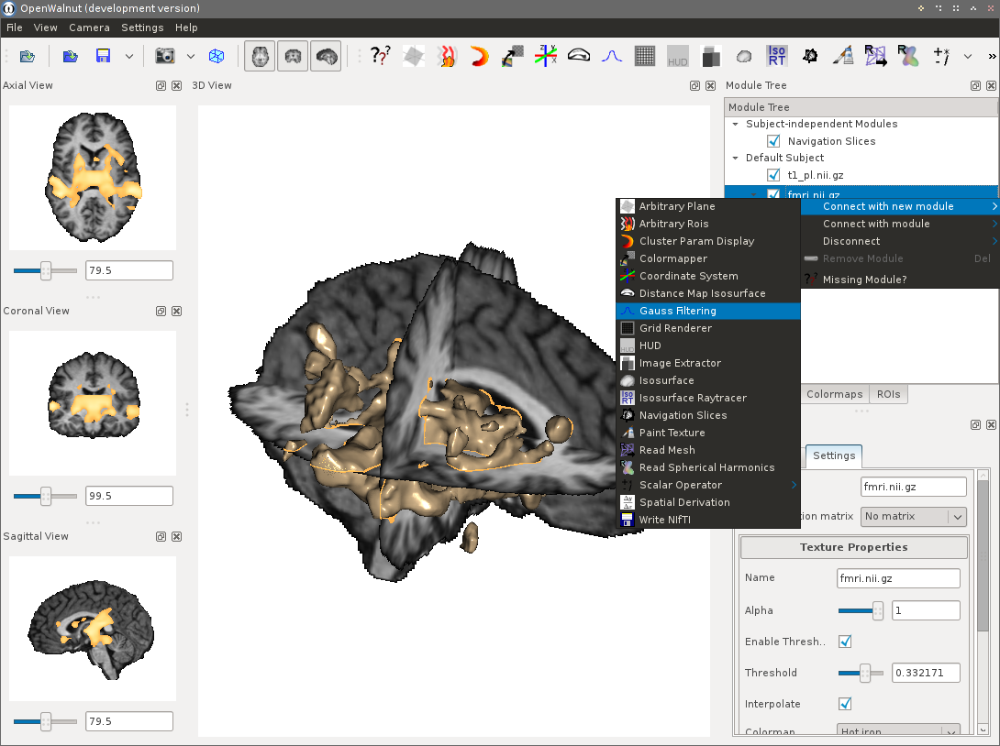
When done, the Gauss module appears just below the FMRI data, similar to the Isosurface module. This, again, shows that you use the output data of the FMRI dataset module as input for the Gauss Filtering module. Unfortunately, we already applied the Isosurface module directly to the FMRI data. As we want the isosurface on the smoothed data, we now have to possibilities:
The next images shows the second possibility. Right click on the Gauss Filtering module. This time do NOT use "Connect with new module". We want to connect this to an existing module. So, we use the second submenu: "Connect with module":
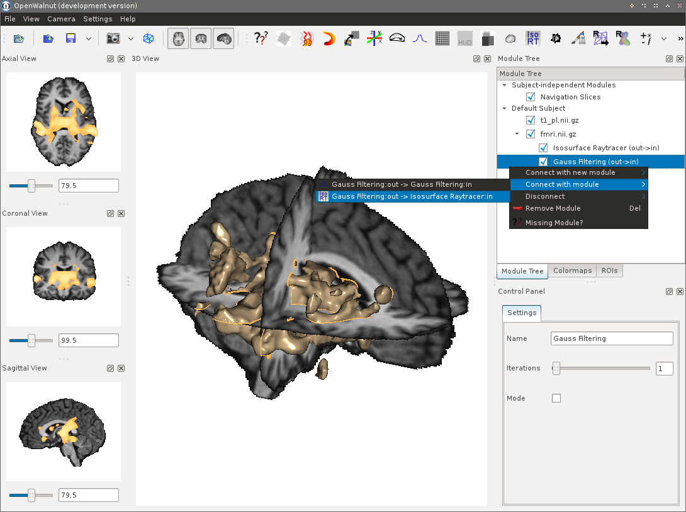
This menu now shows all possible connections between existing modules and Gauss Filtering:out. We select to connect to Isosurface Raytracer:in. This denotes the main input of the Isosurface module. After doing this, the Isosurface module appears below (and indented) the Gauss Filtering. This tells us that the output of the Gauss Filter module is used as input for the Isosurface Raytracer.
Now, the isosurface looks nice. But we want it even smoother. You will now remember that we have changed parameters of the Isosurface module by selecting it and modifying it in the control panel. We can do the same for the Gauss module. Select it and increase the number of iterations in the control panel. A tool-tip always gives you a hint on the meaning of a parameter:
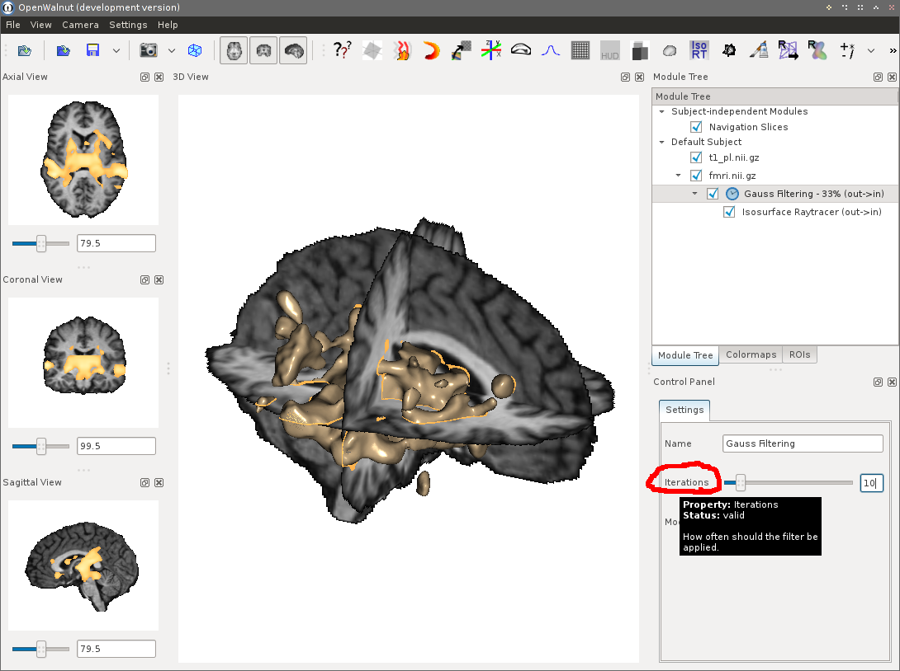
After changing the value, the Gauss Filter starts. Did you notice the little clock in the module tree, next to the Gauss Filtering module? This indicates that the module is currently working. A percentage information always tells you the progress. Please also note that OpenWalnut is still responsive. You do not need to wait for the Gauss module to finish. You can continue loading data or modifying other modules.
While the Gauss module is working, we load another dataset. We load an eigenvector dataset. After loading, it directly appears on the navigation slices, in the navigation views and on the isosurface. Unfortunately, we do not see any context anymore. We can modify the color-mapping properties of each loaded dataset by selecting it in the module tree. Simply change the wanted property in the control panel:
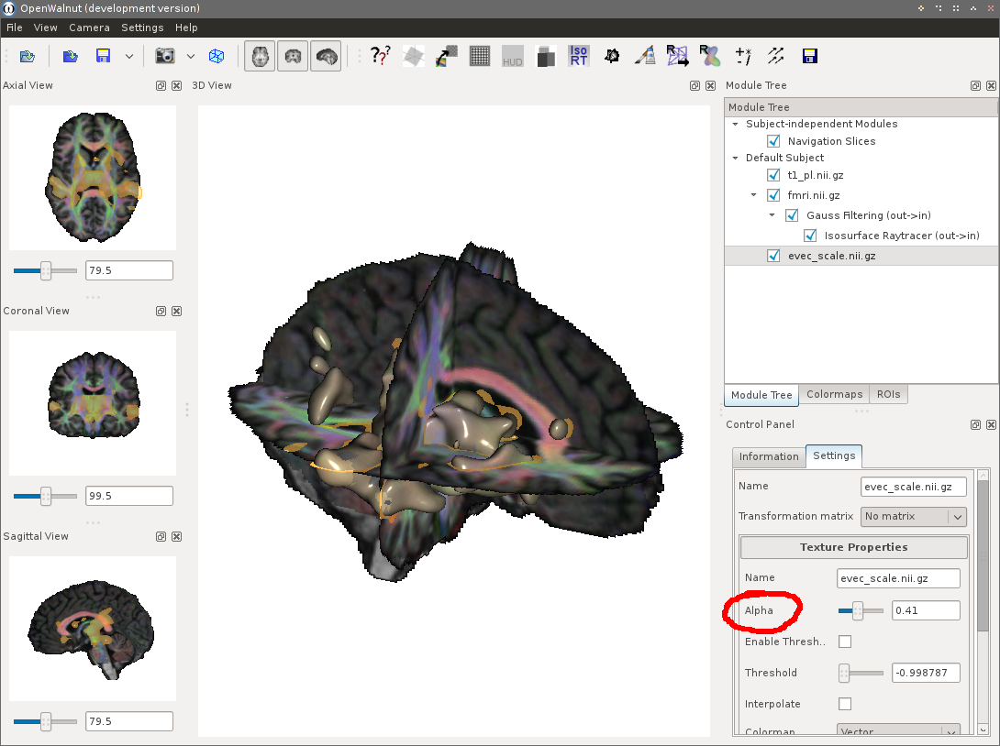
You can also modify the used colormap, thresholds, and interpolation features. Sometimes it is needed to change the ordering of color-mops. You can use the "Colormaps" tab in the module tree for doing this. This defines the order in which the color-maps of each dataset are blended. Additionally, disabling the data module in the module tree, using the little checkboxes, hides the colormap of this dataset completely.
At this point, we know how to load data, apply modules to them, and how to apply modules to others. In OpenWalnut, modules may also have multiple inputs and outputs. In the following, we show how to work with these modules in the module tree. A quite prominent example for a module with multiple inputs is the Scalar Operator module. It allows you to do algebra with two scalar datasets. Of course, the will need two operands. We now apply the Scalar Operator to the FMRI dataset. You will now notice that the Scalar Operator module has a submenu. This is due to the fact that OpenWalnut can not automatically decide which input is the best matching for your data. We select the input "operantA":
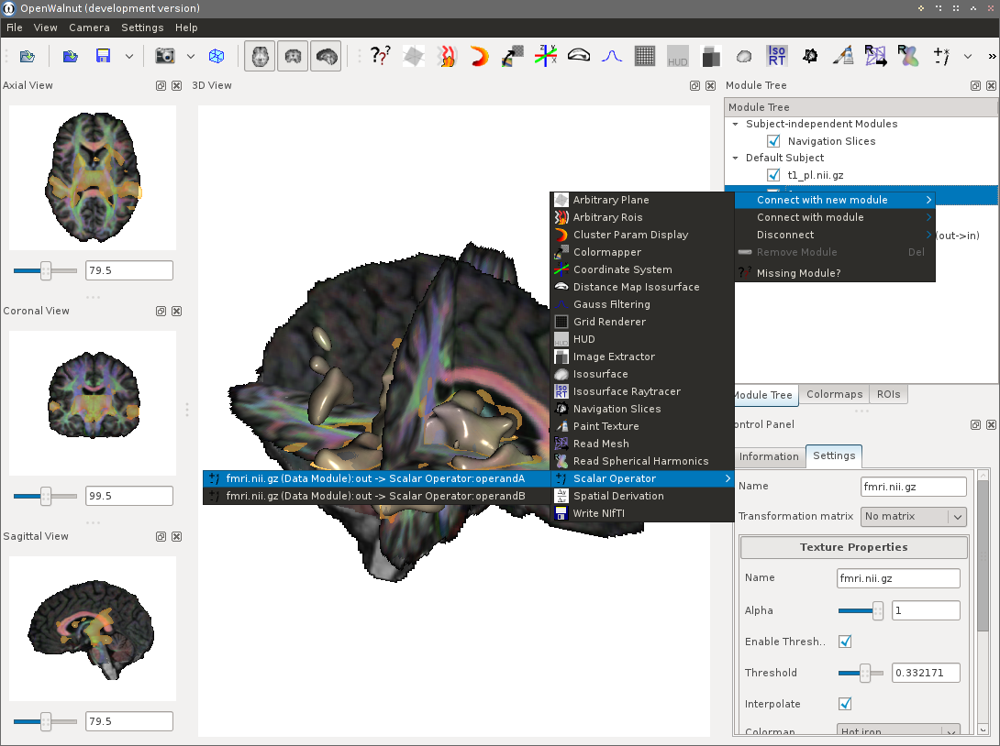
After clicking, the Scalar Operator module appears below the FMRI dataset, exactly like the Gauss Filtering module, since they both use the output of the FMRI dataset module as their input. As we want to know the difference between the FMRI data and the filtered FMRI data, we want to have the output of the Gauss Filtering module as second operand. To achieve this, select the Gauss module in the module tree. Right-click on it and go to the sub-menu "Connect with module". Remember this sub-menu? We used this to re-connect the Isosurface module earlier. This shows only modules currently existing in the module tree. In this sub-menu, we see that we could connect the Gauss Filtering output toSimilar to the previous case, where we had to explicitly define the input to use for the FMRI data, we now need to tell OpenWalnut to use the second operand input for the smoothed FMRI data:
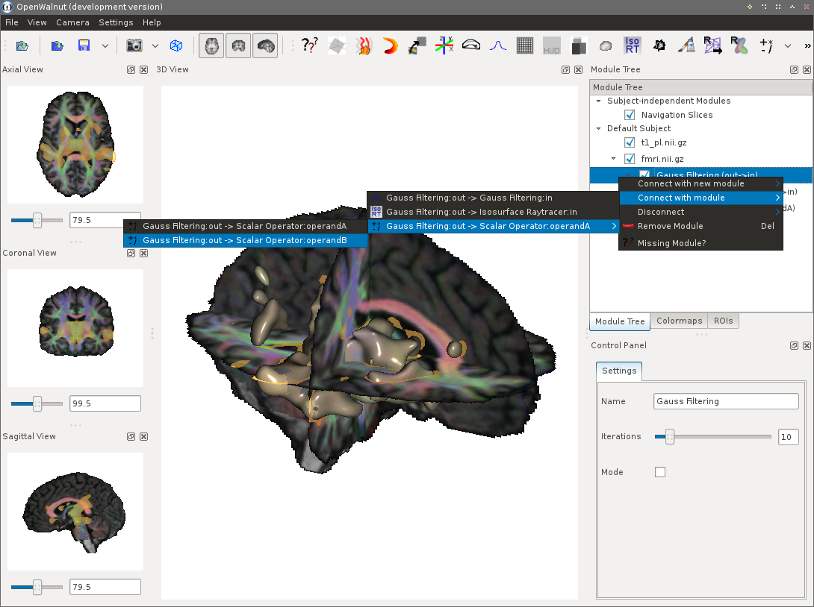
Now, the Scalar Operator module appears twice in the module tree. One, directly below the Gauss Filtering module, and one below the FMRI data. The text in braces tells you which output of Gauss Filtering is connected to which input of Scalar Operator. You will also notice that both entries are inter-linked. If you select one, the other one is automatically selected too, since they are the same module. In the control panel, we now choose the operation "A-B".
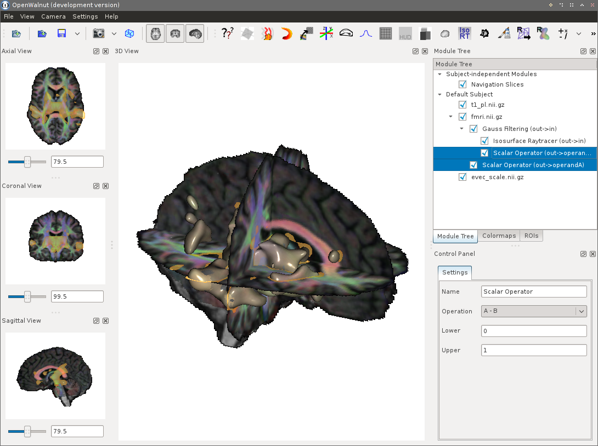
But how can we see this difference now? Scalar Operator simply provides an output with the difference data now. You can apply every module you want, which supports scalar data; like the Isosurface Raytracer. But we want to see the difference as colormap. Generally, OpenWalnut handles colormapping automatically. Loaded data, which can be shown as colormap, will automatically appear on surfaces and the navigation slices. Data, which was derived from other data, maybe by using pprocessing modules (Gauss, Scalar Operator, ...) are not automatically used as colormap. But you can tell OpenWalnut to do so. Simply apply the "Colormapping" module to the output you want to see:
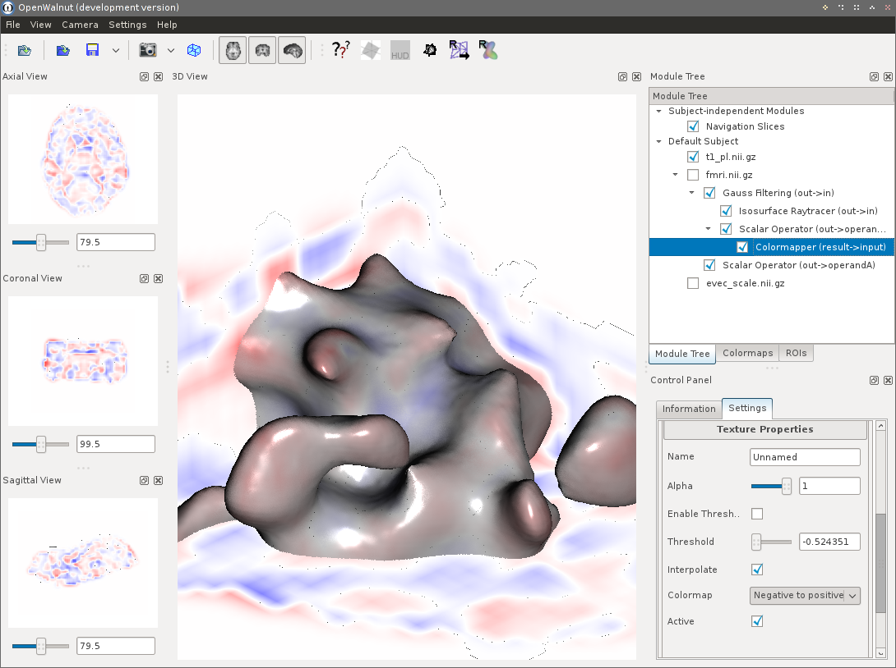
We choose a Blue-Red colormap here and disabled all the other colormaps by disabling them in the module tree. You can see, that the colormap also appears on the isosurface. You can modify alpha values and tresshold to combine the difference colormap with the other colormaps we already have.
To get an overview on a module's description, inputs and outputs, as well as its status, you can always hover over it with the mouse. A tool-tip will give you useful information about the module. This is also the case for module parameters in the control panel and module buttons in the module toolbar.
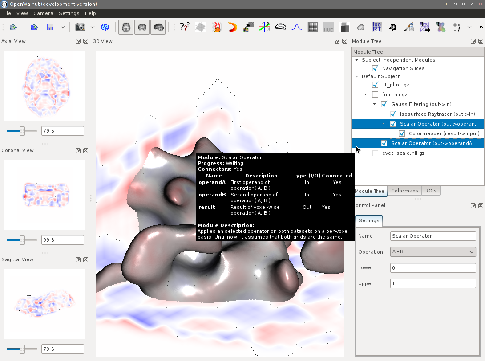
What have we learned so far? We got used to the OpenWalnut GUI and learned how to load and process data.